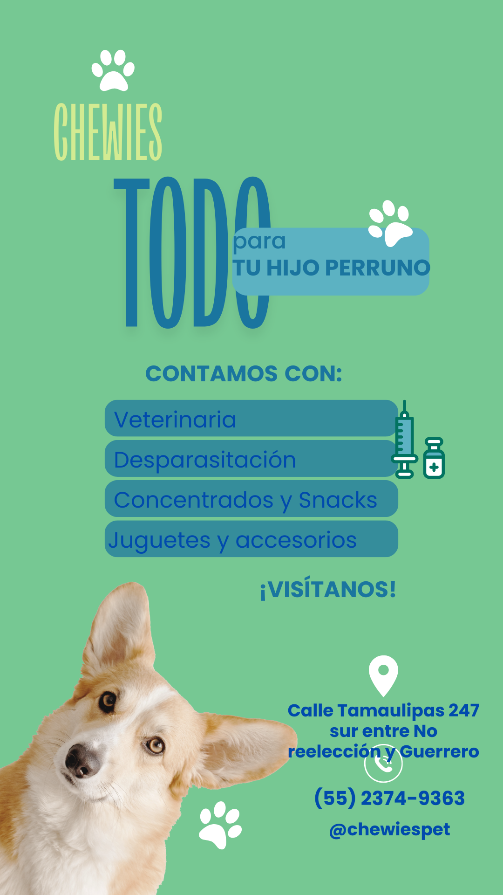

Inicio
Acerca de
Catálogo
Recursos
Contacto
tareas de cultura digital
Parcial 1
Diagrama de Flujo – Determinación de Triángulos
Ver diagrama en PDF
Práctica de Piktochart o Canva
Tarea 3 – Uso de IA's
Ver mapa mental en PDF
Ver uso de IA en PDF
Ver uso de IA en equipo en PDF
Teoría del Color y Diseño Gráfico
Ver teoría en PDF

Página Web de Tema Libre (opcional)
Parcial 2
Investigación Explicativa vs Aplicada
Tarea no hecha
Estudio de Tráfico en Ciudad Obregón
Ver estudio en PDF
Ver encuesta en PDF
Creación de Tema para Sitio Web
Ver tema en PDF
Página Básica HTML
Estilos CSS3
Investigación Frameworks y CDN
Ver investigación en PDF
Menú Interactivo (opcional)
Parcial 3
Etiquetas HTML: strong, b, em
Etiquetas HTML: div, img
Etiquetas HTML: table
Formularios Parte 1
Parcial 4
Video Valor del Mes (opcional)
Tu navegador no soporta videos.
Entrega Final del Sitio Web